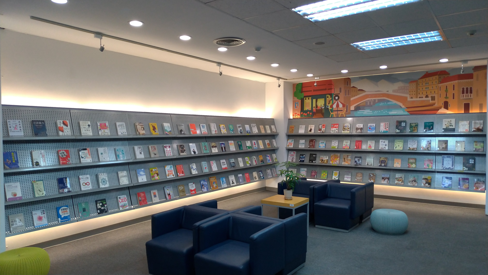

第3ステーション：新刊展示エリア・24時間返却ボックス
ここは最新の書籍が並ぶ新刊展示エリアです。新しく出版された書籍は、展示されるとすぐに貸出可能となります。
エリア内には快適なソファ席が設置されており、多くの学生がここで読書に没頭し、時間を忘れてしまうこともあります。
貸出期限が来た本は、カウンターで返却する以外に、図書館入口右側の「24時間返却ボックス」でも返却できます。開館時間外でも便利に返却可能です。
ここは最新の書籍が並ぶ新刊展示エリアです。新しく出版された書籍は、展示されるとすぐに貸出可能となります。
エリア内には快適なソファ席が設置されており、多くの学生がここで読書に没頭し、時間を忘れてしまうこともあります。
貸出期限が来た本は、カウンターで返却する以外に、図書館入口右側の「24時間返却ボックス」でも返却できます。開館時間外でも便利に返却可能です。